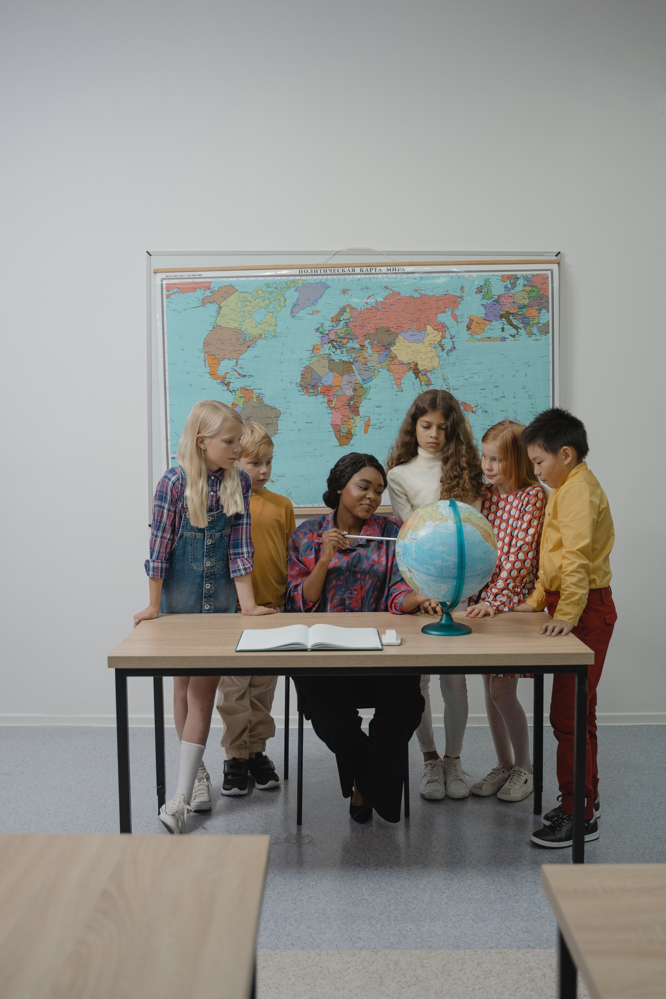
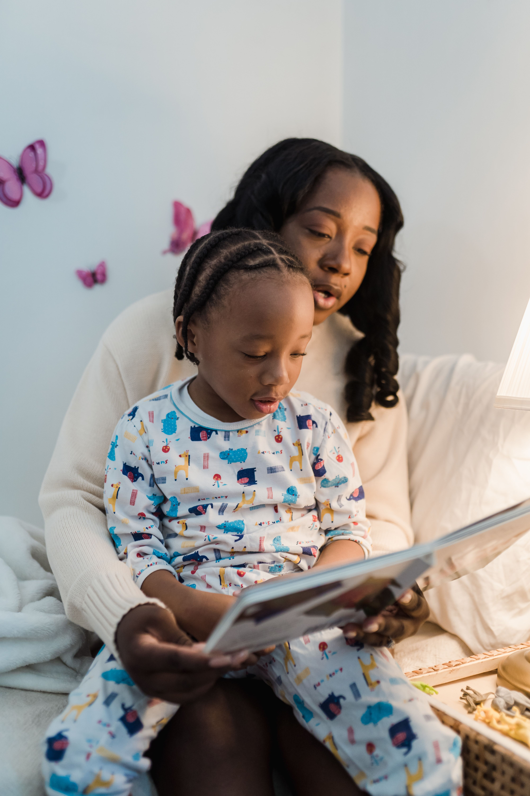
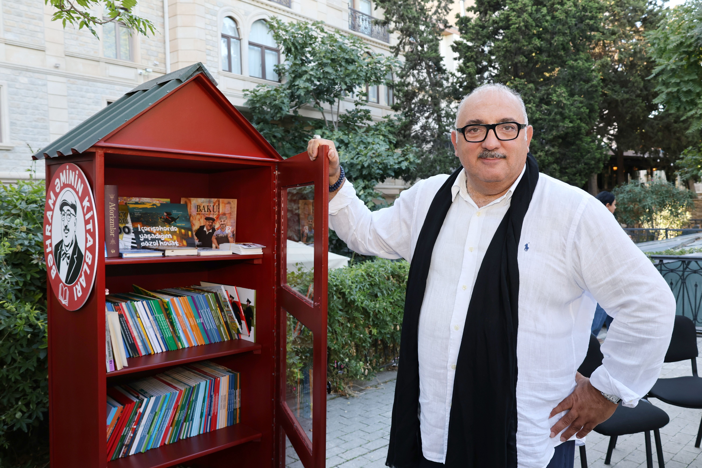
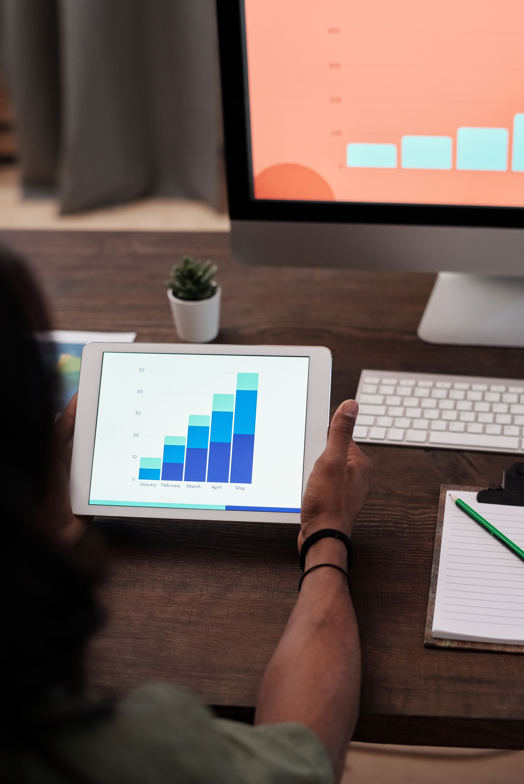

O que é o ODS 4?
Os Objetivos de Desenvolvimento Sustentável (ODS) são 17 metas globais
criadas pela ONU em 2015 e que devem ser alcançadas até 2030. O ODS 4 trata
da educação: seu objetivo é garantir que todas as pessoas tenham acesso a um
ensino de qualidade, sem exclusão, e que possam continuar aprendendo ao longo
da vida.
Ele tem 10 metas, que vão da educação infantil ao ensino superior,
passando pela formação de professores e pela estrutura das escolas.
Educação no Brasil
Avanços
Analfabetismo
De acordo com o IBGE, no ano de 2025, a taxa de analfabetismo caiu para 4,9%,
a primeira vez abaixo de 5% desde o início da série, em 2016, quando era de 6,7%.
Frequência
O número absoluto de alunos caiu em 2025, porém a taxa de frequência subiu.
Ensino Médio
80,6% dos jovens de 15 a 17 anos frequentavam ou já tinham concluído o ensino médio,
3,8 pontos percentuais a mais que em 2024.
Desafios
Ideb
No ensino médio, o Ideb foi de 4,5, abaixo da meta de 5,2 estabelecida no Plano Nacional de Educação.
Saeb
A matemática no ensino médio é o maior gargalo: ainda não voltou aos níveis anteriores a 2020
e está no nível abaixo do básico.
Analfabetismo Funcional
Segundo o Inaf 2024, cerca de 29% dos brasileiros de 15 a 64 anos são analfabetos funcionais,
ou seja, três em cada dez. O Inaf soma os níveis "analfabeto" e "rudimentar" para chegar ao analfabetismo
funcional.
Leitura no Brasil
Panorama
Segundo a 6ª edição da pesquisa Retratos da Leitura no Brasil (2024),
53% dos brasileiros não são leitores. É a primeira vez que o número de
não leitores supera o de leitores desde o início da série histórica.
Quem é considerado leitor?
A pesquisa chama de leitor quem leu um livro, inteiro ou em parte, nos
três meses anteriores. Se considerarmos só quem leu um livro inteiro, o
número cai para 27%.
Perda de leitores
- Entre 2019 e 2024, o país perdeu 6,7 milhões de leitores.
- Desde 2015, o total chega a 11,3 milhões.
- A queda atingiu todas as classes sociais e faixas etárias.
- Entre as mulheres, os leitores foram de 54% para 49%. Entre os
homens, de 50% para 44%.
Por que as pessoas não leem?
A falta de tempo é o principal motivo: 46% dos leitores dizem que não
leram mais por isso, e 33% dos não leitores também a apontam. A internet
disputa a atenção: 78% dos entrevistados a usam no tempo livre.
Leitura e analfabetismo funcional
A falta do hábito de leitura entre boa parte dos brasileiros é um grande obstáculo
para o avanço da educação no país. Quem lê pouco tem menos prática para compreender textos,
e isso dificulta o aprendizado em todas as matérias.
Os resultados da pesquisa Retratos da Leitura no Brasil de 2024 ajudam
a entender por que o Brasil ainda tem 29% de analfabetos funcionais, segundo o
Inaf 2024.
Ligação com o ODS 4
Ler mais ajuda a combater o analfabetismo funcional (meta 4.6) e a
melhorar a aprendizagem (meta 4.1). Garantir bibliotecas e livros acessíveis
reduz desigualdades, como previsto nas metas 4.5 e 4.a.
Como contribuir com o ODS 4

Em casa
A família é o primeiro lugar onde a criança aprende. Acompanhar a vida escolar,
conversar sobre o que ela aprendeu e garantir que frequente a escola e a educação
infantil desde cedo já faz diferença.
Ler em voz alta, reservar de 10 a 15 minutos por dia e deixar a criança escolher
o que ler ajuda a criar o hábito da leitura. Em casa também se ensinam valores como
respeito, diversidade e cuidado com o meio ambiente.

Na escola
Uma escola de qualidade inclui todos os estudantes, respeitando diferenças de
gênero, raça, renda e deficiência. Isso depende de professores valorizados, com
formação e boas condições de trabalho, e de uma estrutura adequada: salas seguras,
bibliotecas abertas, acesso à internet e acessibilidade.
Clubes de leitura, projetos sobre sustentabilidade e cidadania e feiras de troca
de livros aproximam os alunos dos estudos. A escola também pode orientar os jovens
sobre cursos técnicos, ensino superior e o mundo do trabalho.

Na comunidade
Quem vive perto da escola também pode ajudar. Dá para ser voluntário em projetos
de reforço escolar e de alfabetização de jovens e adultos, ou oferecer cursos,
oficinas e mentorias para quem busca emprego ou quer empreender.
Doar ou trocar livros e materiais escolares e criar mini-bibliotecas em praças e
bairros leva a leitura a mais gente. É importante apoiar quem tem mais dificuldade
de acesso, como pessoas com deficiência, moradores de áreas distantes e quem precisa
voltar a estudar.

Como cidadão
Todo cidadão pode acompanhar o orçamento e as metas da educação no seu município
e no seu estado e cobrar resultados. Participar de conselhos escolares, reuniões de
pais e audiências públicas é uma forma direta de influenciar essas decisões.
Conferir indicadores oficiais, como os do IBGE, do Ideb e do Inaf, mostra como a
educação evolui. Divulgar o ODS 4 nas redes sociais e entre amigos e familiares
ajuda a ampliar o debate.